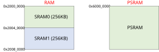
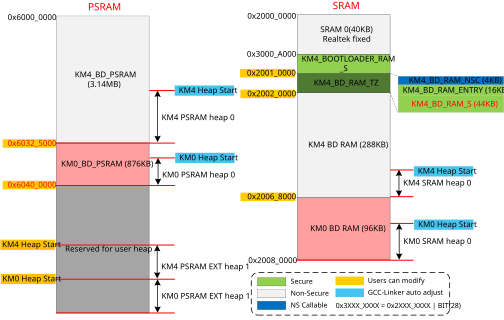

Introduction
This chapter introduces the default memory layout of RTL8721Dx and how to modify the memory layout if needed.
RAM Layout
In total, there are 512KB SRAM on chip, and the size of PSRAM can be 0MB/4MB/8MB/16MB…, which is decided by users. The RAM layout is illustrated below.
{kind=link}

RAM layout
SRAM0 (First 40KB) Layout
The first 40KB SRAM0 layout is illustrated in the following figure and table. It is the same for all situations.

SRAM0 (first 40KB) layout
Items |
Start address |
Size |
Description |
Mandatory |
|---|---|---|---|---|
KM0_ROM_BSS_RAM |
0x2000_0000 |
4KB |
KM0 ROM BSS |
√ |
KM0_MSP_RAM |
0x2000_1000 |
4KB |
KM0 Main Stack Pointer |
√ |
KM0_STDLIB_HEAP_NS |
0x2000_2000 |
4KB |
KM0 ROM STDLIB heap |
√ |
KM4_MSP_NS |
0x2000_3000 |
4KB |
KM4 non-secure Main Stack Pointer |
√ |
KM4_ROM_BSS_COMMON |
0x2000_4000 |
3.25KB |
KM4 ROM secure and non-secure common BSS |
√ |
KM0_BOOT_RAM |
0x2000_4D00 |
64B |
KM0 IMG2 entry |
√ |
KM0_IPC_RAM |
0x2000_4E00 |
512B |
Exchange messages between cores |
√ |
KM4_ROM_BSS_NS |
0x2000_5000 |
4KB |
KM4 ROM non-secure common BSS |
√ |
KM4_STDLIB_HEAP_NS |
0x2000_6000 |
4KB |
KM4 ROM non-secure STDLIB heap |
√ |
KM4_ROM_BSS_S |
0x3000_7000 |
4KB |
KM4 ROM secure-only BSS |
√ |
KM0_RTOS_STATIC_0_NS |
0x2000_8000 |
4KB |
KM0 RTOS static pool position |
√ |
KM4_MSP_S |
0x3000_9000 |
4KB |
KM4 secure Main Stack Pointer |
√ |
RAM & PSRAM Layout
There are 288KB SRAM for KM4 and 96KB SRAM for KM0, which can be used for Power Management Controller (PMC) code and performance-cared text and data. The following figure and table illustrate the RAM layout with PSRAM.
{kind=link}

RAM layout (with PSRAM)
Item |
Start address |
Size (KB) |
Description |
Mandatory |
|---|---|---|---|---|
SRAM0 |
0x2000_0000 |
40 |
For ROM BSS, MSP, … |
√ |
KM4 Bootloader |
0x3000_A000 |
24 |
KM4 secure bootloader, including code and data |
√ |
KM4 IMG3 |
0x2007_0000 |
64 |
KM4 IMG3, can be recycled if IMG3 is not needed |
√ |
KM4 BDRAM |
0x2001_0000 |
288 |
KM4 BDRAM data, BSS and heap |
√ |
KM0 BDRAM |
0x2006_8000 |
96 |
KM0 BDRAM data, BSS and heap |
√ |
KM4 PSRAM |
0x6000_0000 |
3220 |
KM4 PSRAM code, can be empty |
√ |
KM0 PSRAM |
0x6032_5000 |
876 |
KM0 PSRAM code, can be empty |
√ |
KM4 HEAP EXT |
0x6FFF_FFFF |
0 |
If KM4 heap is not enough, it can be used to extend the heap size |
x |
KM0 HEAP EXT |
0x6FFF_FFFF |
0 |
If KM0 heap is not enough, it can be used to extend the heap size |
x |